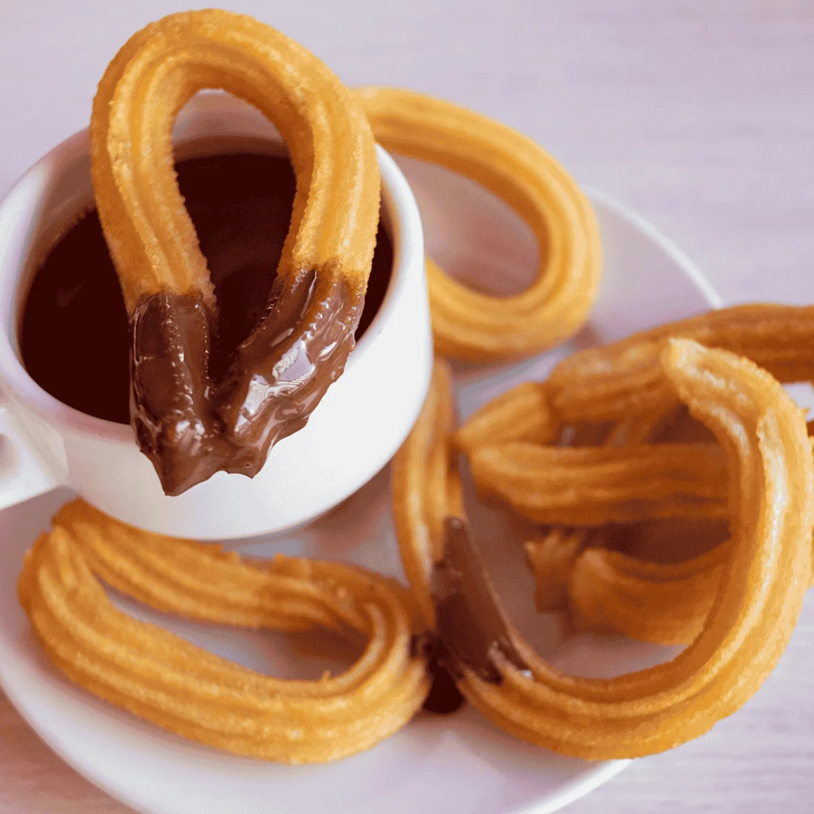
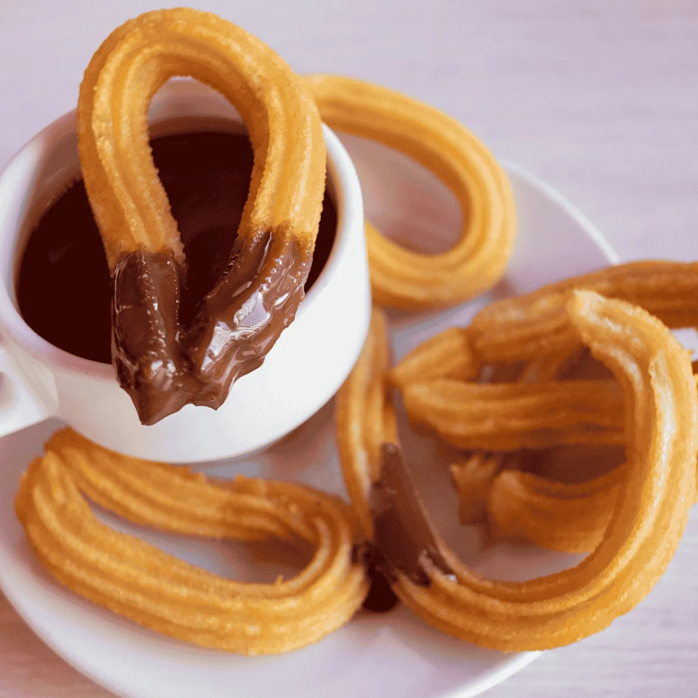
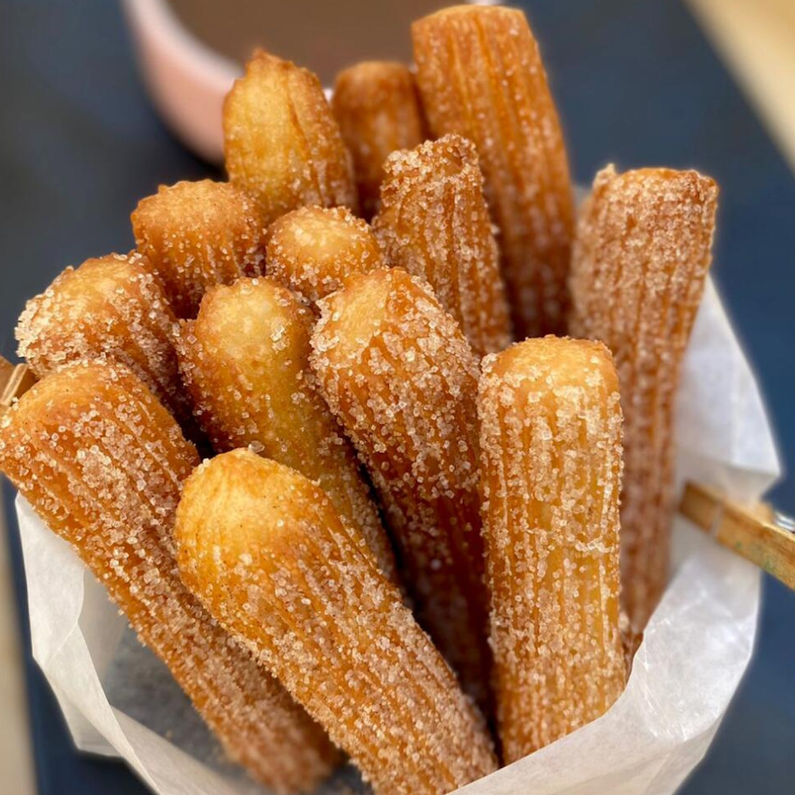
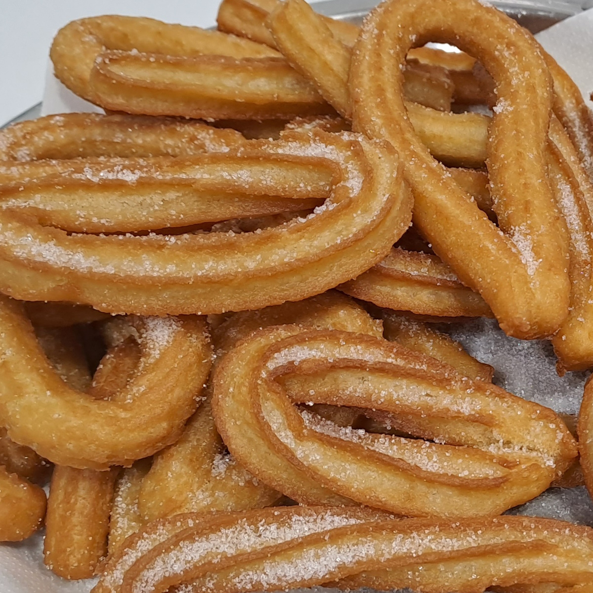
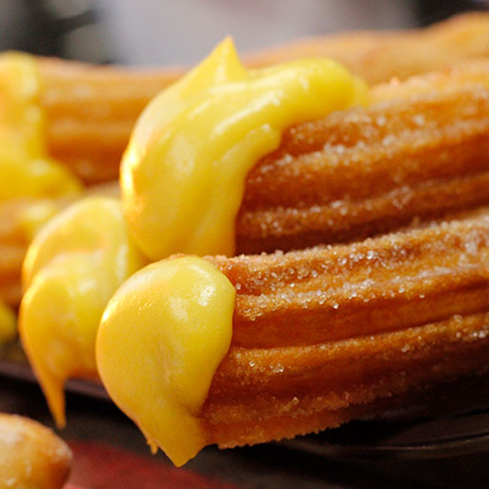
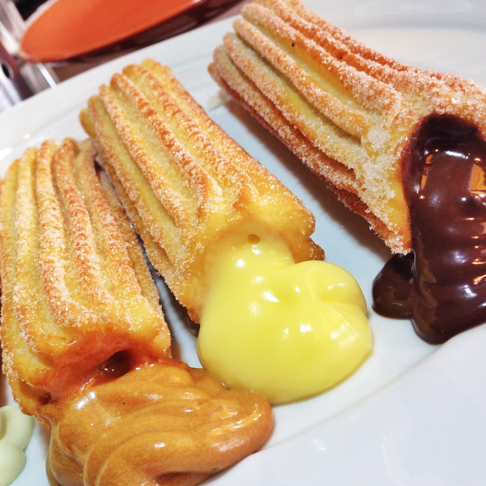

Xurros amb xocolata
Gaudeix dels nostres deliciosos xurros acabats de fer, acompanyats d'una rica xocolata calenta.


Xurros tradicionals
Prova els nostres xurros tradicionals, fets amb la recepta clàssica que ha passat de generació en generació.


Xurros farcits
Descobreix els nostres xurros farcits amb crema, nata o xocolata per a una experiència encara més dolça.